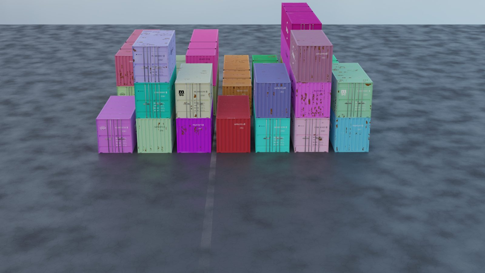
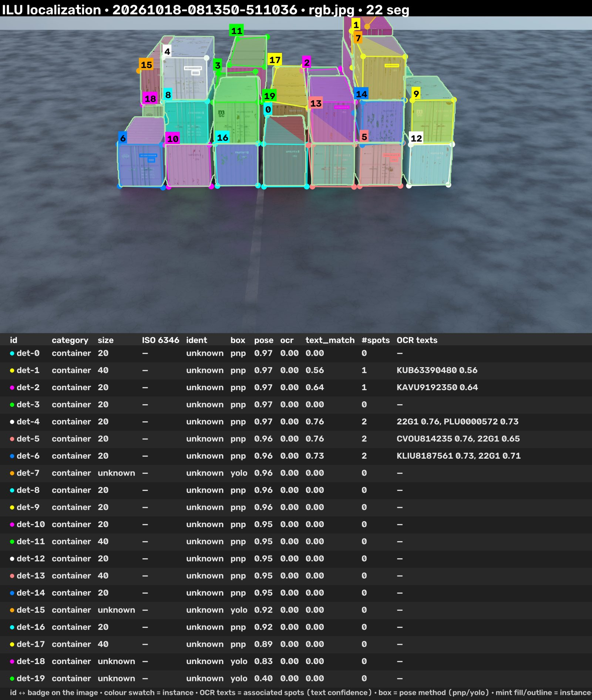
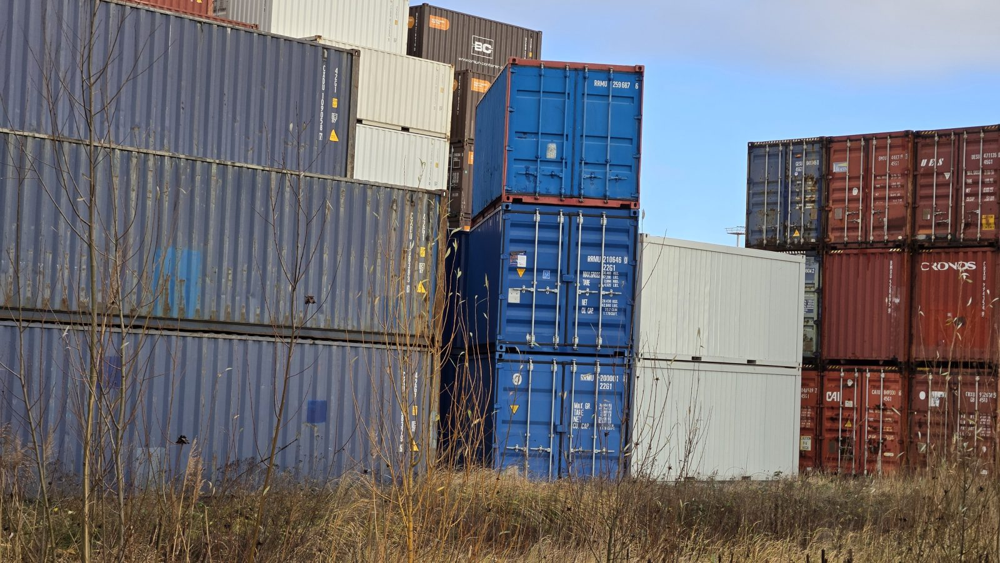
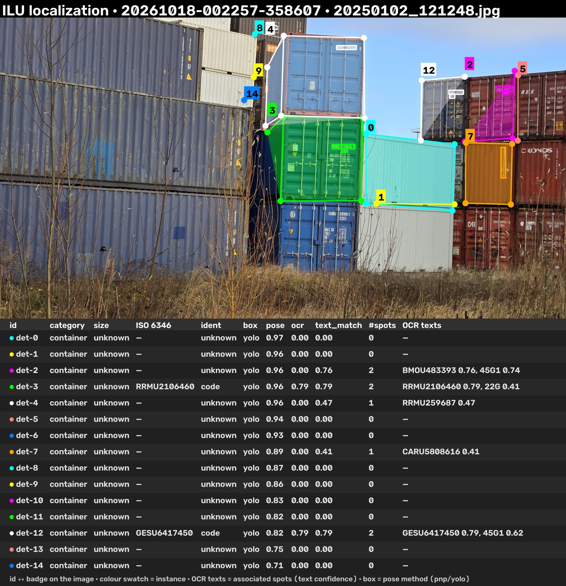
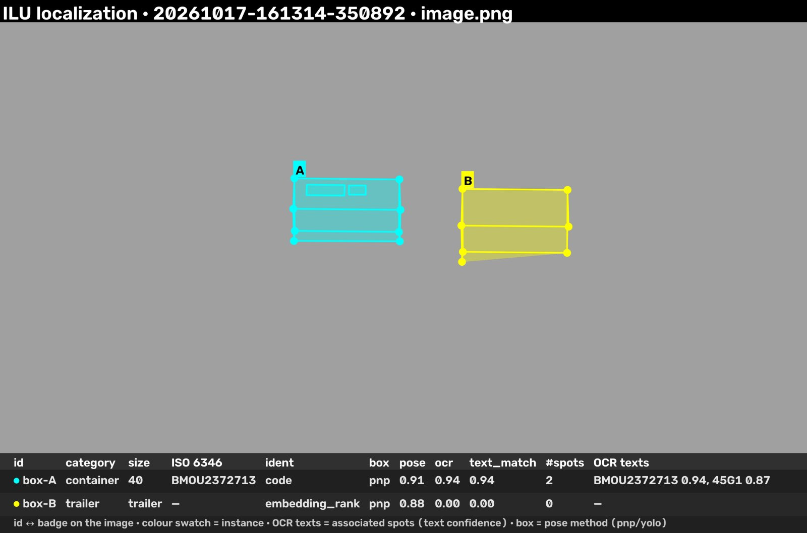

A DAG-orchestrated vision pipeline: corner-keypoint pose estimation, instance segmentation and TRUDI-fine-tuned OCR run as independent stages over JSON artifacts, then get associated and fused into validated ISO 6346 records with real-world 6D poses.
Every image below is the run overlay: instance-tinted 8-corner wireframes, OCR quads, id badges and a detail table strip. Input → output first, then the fused records.


| id | category | size | ISO 6346 | ident | pose | OCR texts (assoc.) |
|---|---|---|---|---|---|---|
| det-1 | container | 40 | — | unknown | pnp 0.97 | KUB63390480 0.56 |
| det-2 | container | 20 | — | unknown | pnp 0.97 | KAVU9192350 0.64 |
| det-4 | container | 20 | — | unknown | pnp 0.97 | 22G1 0.76, PLU00000572 0.73 |
| det-5 | container | 20 | — | unknown | pnp 0.96 | CVOU814235 0.76, 22G1 0.65 |
| det-6 | container | 20 | — | unknown | pnp 0.96 | KLIU8187561 0.73, 22G1 0.71 |
| det-11 | container | 40 | — | unknown | pnp 0.95 | — |
Full backend stack on a synthetic drone render. Pose is solved by PnP against known camera
intrinsics (conf 0.76–0.97); 12× 20 ft, 4× 40 ft, 4 unknown size.
OCR associates codes to boxes, but every candidate currently fails ISO 6346 check-digit
validation — those records stay ident: unknown instead of guessing.


| id | category | ISO 6346 | ident | pose | OCR texts (assoc.) |
|---|---|---|---|---|---|
| det-3 | container | RRMU2106460 | code | yolo 0.96 | RRMU2106460 0.79, 22G 0.41 |
| det-12 | container | GESU6417450 | code | yolo 0.82 | GESU6417450 0.79, 45G1 0.62 |
| det-2 | container | — | unknown | yolo 0.96 | BMOU483393 0.76, 45G1 0.74 |
| det-4 | container | — | unknown | yolo 0.96 | RRMU259687 0.47 |
| det-7 | container | — | unknown | yolo 0.89 | CARU5808616 0.41 |
Unedited terminal photograph with real occlusion, glare and weathering. Two codes survive
check-digit validation (RRMU2106460, GESU6417450); three more OCR
candidates are read but rejected by validation — honest failures, not silent ones.
No camera calibration for this frame, so corners stay in image space (no 3D scene).

| id | category | size | ISO 6346 | ident | pose | OCR (assoc.) |
|---|---|---|---|---|---|---|
| box-A | container | 40 | BMOU2372713 | code | pnp 0.91 | BMOU2372713 0.94, 45G1 0.87 |
| box-B | trailer | trailer | — | embedding_rank | pnp 0.88 | — |
The GPU-free end-to-end path used by uv run pytest: pre-baked text spots, pose boxes
and embeddings flow through the real associate → fuse logic and match the golden file
byte-for-byte. Shows both identification methods and a trailer category.
Conceptual system view (redrawn from the project's draw.io diagram), then the concrete pipeline DAG that implements it.
flowchart TD
IMG["Image"] --> TXT["Text detection
& recognition"]
IMG --> SEG["Instance segmentation"]
IMG --> KP["Keypoint detection"]
KP --> POSE["Estimate 6D pose
relative to camera"]
CAM["Drone metadata
· camera properties"] -.-> POSE
POSE --> MAP["Map to 6D pose
in real world"]
GPS["Drone metadata
· GPS position"] -.-> MAP
TXT --> ID["Identify ILU
(ISO 6346)"]
TXT --> CAT["Categorize ILU"]
SEG --> ID
SEG --> CAT
CAT --> POSE
ID --> OUT["Identified & categorized ILU
with GPS coordinates"]
MAP --> OUT
Links each pose box to OCR quads whose centres fall inside its visible corner bbox (configurable
margin_px) — no global tracking, just geometric association per frame.
Validates ISO 6346 owner codes and check digits, picks category (container / trailer), size class
and the identification method: code > embedding_rank >
unknown.
Pydantic models (ImageRef, PoseBoxes, TextSpots,
Associations, ILURecords) versioned with schema_version —
the contract between all stages.
A library + CLI tools, not a service. Everything is a stage registered in one dictionary.
Stages only talk through runs/<run_id>/<stage>/<name>.json.
Config inputs reference "stage/artifact"; a missing artifact fails the stage
and aborts the run. The manifest is rewritten after every stage.
Stage outputs are keyed on class + config JSON + input file hashes in .cache/stages.
Re-running an unchanged pipeline replays from cache; --no-cache forces execution.
Sibling repos, not vendored: ../ilu-pose-estimation (YOLOv8 corners + PnP),
../ilu-detection (TRUDI instance segmentation), ../mmocr
(DBNet++ det + RobustScanner rec, fine-tuned on TRUDI id text).
Unit + fixture e2e always run in CI-less pytest; backend integration tests are
opt-in via RUN_BACKEND_TESTS=1. Fusion output is diffed against
tests/golden/ilu_records.json.
tools/visualize_run.py renders a completed run: cv2 2D overlay (wireframes, OCR quads,
id badges, detail strip), a plotly 3D world scene with camera frustum, and a self-contained HTML
report.
Pipelines are YAML (configs/pipeline*.yaml) mapping string impl keys to
registered stage classes. Relative paths resolve against the config's base dir.
Python ≥ 3.11, managed with uv. The fixture pipeline needs no GPU.
# install (dev group: pytest) uv sync # all tests, incl. fixture end-to-end uv run pytest # fixture pipeline (no GPU) uv run python tools/run_pipeline.py # real backends (GPU + sibling repos) uv run python tools/run_pipeline.py \ --config configs/pipeline_backends.yaml # render overlay + 3D scene + report uv run python tools/visualize_run.py
The fixture pipeline ends in records like this — one container identified by validated ISO 6346 code, one trailer ranked by embedding similarity:
{
"schema_version": "1",
"image_path": "tests/fixtures/image.png",
"records": [
{
"ilu_id": "box-A",
"category": "container",
"iso_code": "BMOU2372713",
"size_class": "40",
"identification_method": "code",
"pose": { "corners_px": [ 8 corners ] }
},
{
"ilu_id": "box-B",
"category": "trailer",
"identification_method": "embedding_rank"
}
]
}